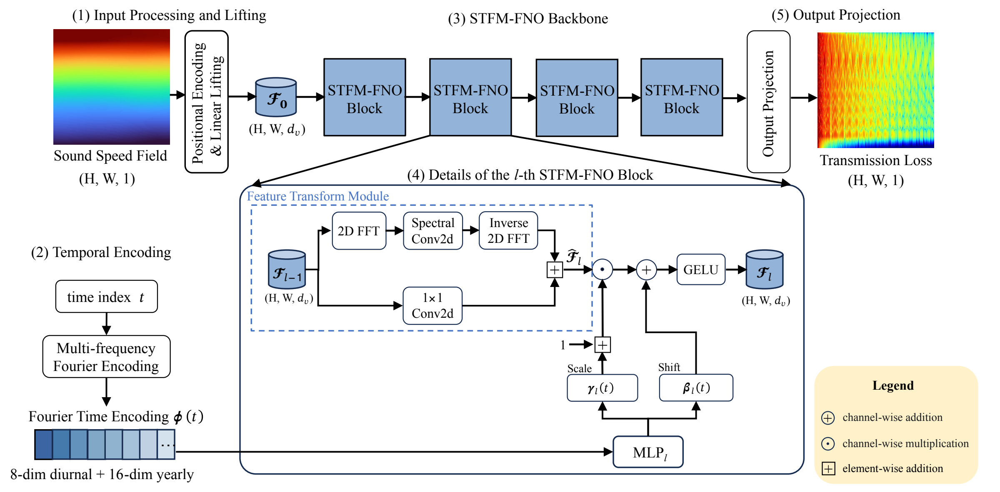
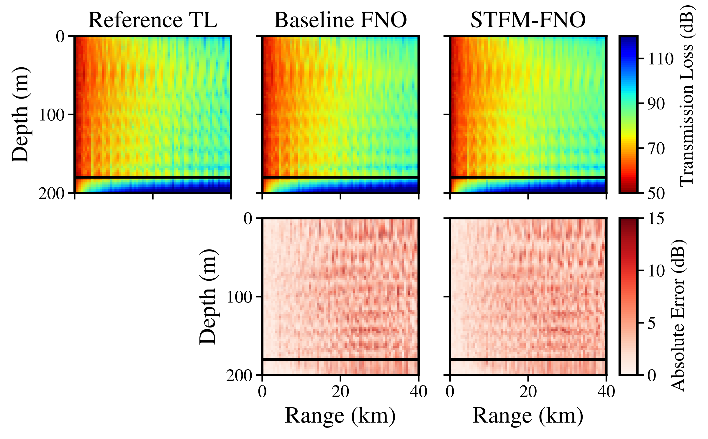

Introduction
Underwater sound prediction changes when the ocean changes.
Sound speed profiles vary with depth and time because the ocean is affected by temperature, salinity, and seasonal dynamics. These changes alter the acoustic field and the transmission loss observed across range and depth. Physics-based solvers are valuable, but repeated simulation over many environmental states can be expensive. TAM-FNO is designed as a learned surrogate: after training, it predicts transmission-loss fields from sound-speed information and time features.
Problem Statement
Learn the map from sound speed and time to transmission loss.
Given a sound-speed profile and its associated time index, the goal is to predict the corresponding acoustic transmission-loss field over range and depth. The sound-speed profile describes the environmental state of the ocean, while the time index carries information about daily and seasonal variation.
In operator-learning terms, the task is to learn a time-parameterized mapping from sound-speed information to transmission loss. TAM-FNO treats time as a conditioning variable rather than simply appending it to the spatial input, so the model can adapt its prediction as the ocean state changes.
Proposed Method
TAM-FNO adds time-aware modulation to a Fourier Neural Operator.
Fourier Neural Operators learn mappings between fields by mixing information in the spectral domain. TAM-FNO keeps this operator-learning backbone and adds a temporal modulation branch. The time branch converts the raw time index into Fourier features, then uses FiLM-style modulation to adjust feature channels inside the FNO blocks.
Lift the field
Sound-speed information is lifted into a higher-dimensional feature space.
Encode time
Multi-frequency Fourier encoding represents periodic time variation.
Modulate channels
Temporal features produce channel-wise scale and shift parameters.
Predict TL
The network projects learned features to a transmission-loss map.

Experiments and Results
The experiments evaluate whether the learned surrogate tracks acoustic-field structure.

What the public site shows
The site keeps the experimental summary lightweight. It shows the selected paper figure and summarizes the main observation instead of publishing raw data, checkpoints, logs, or generated result archives.
Detailed numerical settings and full quantitative tables should be read from the paper.
Time information matters
TAM-FNO uses the same spatial input together with a time descriptor, allowing one model to adapt predictions across changing ocean states.
Visual error is reduced
In the selected example, the TAM-FNO absolute-error map is cleaner than the compared variants, especially in regions with stronger range-depth variation.
Reported metrics improve
The paper reports the best overall metrics for TAM-FNO, including about 15.5% lower RMSE than the strongest non-FiLM baseline.
Reproduce
Run the released TAM-FNO code with local data.
conda env create -f environment.yml
conda activate tam_fno
pip install -e .
python scripts/preprocess_data.py \
--raw-tl /path/to/TL.mat \
--raw-ssp /path/to/SSP.mat
python src/scripts/train.py --epochs 100 --device cuda
python src/scripts/evaluate.pyRepository scope
The repository contains the TAM-FNO implementation, preprocessing utilities, training and evaluation entry points, and this website.
Experimental data and generated artifacts are handled locally by each reproducer.